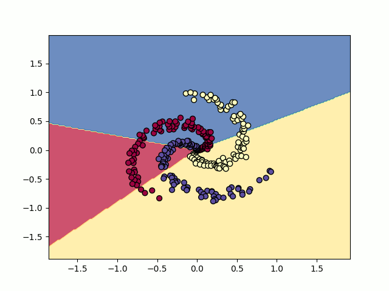
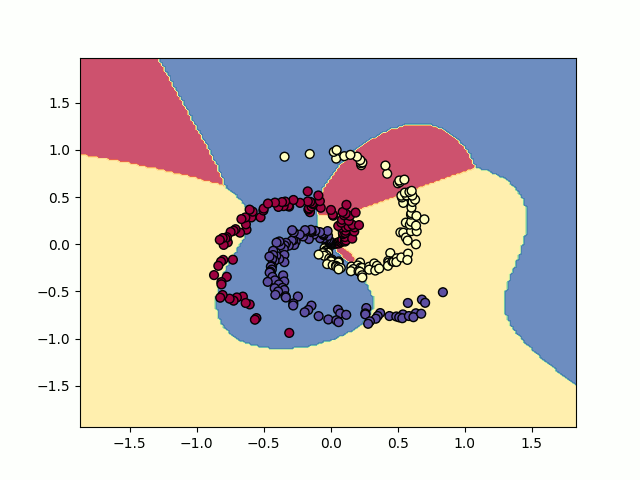
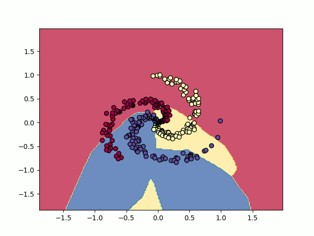

Let's try to classify the points in a spiral dataset. Each point is described using a pair of coordinates (x, y), and only using this coordinate
data we want the classifier to tell us the color of the point (red, yellow, or blue). Two common classifiers are the support vector classifier
and the softmax classifier. We'll use the softmax classifier here.
The softmax classifie interprets all outputs predictions as unnormalized log probabilities. We only want the probability part, so we'll need to
normalize it (make the sum of probabilities equal to 1) and exponentiate it with the natural number e to get rid of the log. Any other base would
work fine but using e seems to be convention, and it makes differentiation (which we'll need later) easier. Note: the softmax function takes in a
vector (it could take in a scalar, but a prediction of 100% probability on one possible output is silly).
Here's the definition of a softmax function.
Equation goes here (full definition with all the symbols)
For example, let's say the output (unnormalized log probabilities) is a vector with three elements. First we exponentiate all the the elements
to get rid of the log.
Expression goes here (vector of three elements)
Expression goes here (exponentiated vector)
Then we'll divide each element by the sum of all three to normalize it. We're left with three numbers that can be interpreted as probabilities. Neat.
Expression goes here

Not bad. After a hundred epochs of training we get around 50% percent. How about transforming the input data (x, y) into higher dimensions
and also using that as our input data? Let's expand out input to include higher degrees by taking x and y to the powers of 2 and 3.
Expression goes here (x,y) -> (x, y, x^2, y^2, x^3, y^3)
(Note: we're using a softmax classifier here, but using a support vector classifier on this expanded set of inputs makes it a support vector machine.
Google "kernel method" or "kernel trick" to see different ways of expanding the input data into higher dimensions).
Here's a visualization of the first dozen epochs of training. Higher degree inputs allow the classifier to learn a linear boundry in a higher dimension,
which ends up looking curved in the two-dimensional contour plot. After a few hundred epochs we get around 53%.

Okay, so can we just keep adding more dimensions to eventually get a perfect prediction? But how much do we add? How much can we add given finite
computational resources? There's no easy answer. It depends on the thing you're trying to classify.

Same image as above (placeholder)
When \(a \ne 0\), there are two solutions to \(ax^2 + bx + c = 0\) and they are \[x = {-b \pm \sqrt{b^2-4ac} \over 2a}.\]
Batch normalization (including the learnable parameters gamma and beta)
Look up pytorch implementation